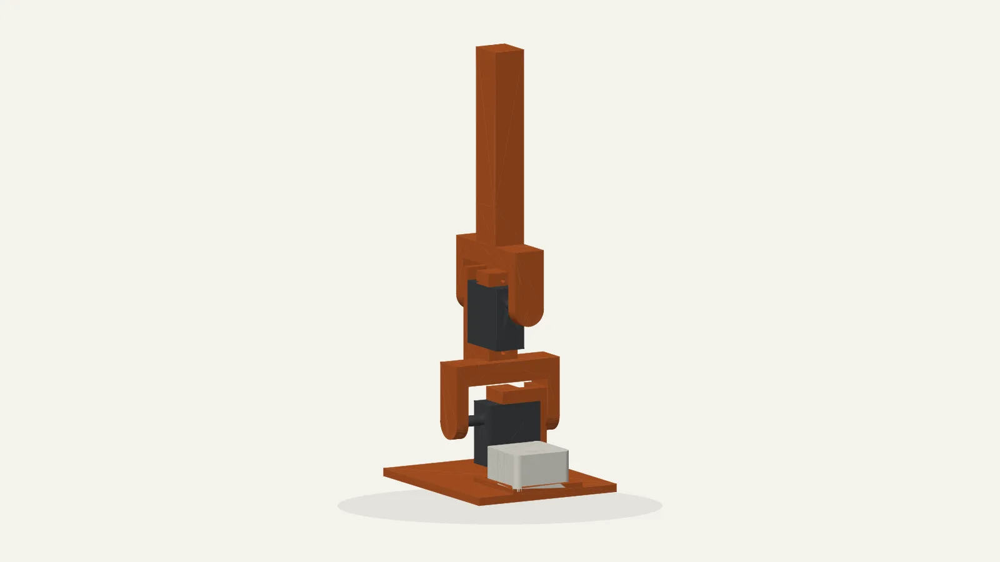

Pico
A small robot with two servos and one job: get back up. An onboard neural network moves its arms to recover from a fall. It’s now reliably self-righting on real hardware.

- Status
- Self-righting works, experiments next
- Progress
- ✓ Build & assemble
✓ Calibrate
✓ Self-righting
→ Experiments (next) - Hardware
- ATOM Matrix, PTK 7465 MG × 2, printed parts
- Stack
- MuJoCo, PPO, Arduino / PlatformIO
- Links
- GitHub
Folio I Build notes
Note 01 · Two motors, back on its feet
Pico has a printed base, two moving arms, and an M5Stack ATOM Matrix: a tiny ESP32 board with an inertial sensor. When the robot tips over, it estimates its tilt and uses the arms to work its way back upright. The recovery runs entirely on the robot once the firmware is flashed.
The interesting part is the controller. A policy trained in the MuJoCo simulator takes four inputs (roll, pitch, and the two servo targets) and chooses how to change those targets. The firmware runs that small neural network about 50 times a second during a recovery attempt.
- Sense. The IMU measures tilt. A sustained fall starts a recovery attempt.
- Move. The policy updates both arm targets every 20 milliseconds.
- Recover. The attempt ends after a steady upright hold, or a timeout.
My build uses HomeMadeGarbage’s SelfRisingRobot design, simulation, and pretrained policy. My work here is assembling the robot, adapting the firmware, and exploring what I can do with it next.
Folio II Build notes
Note 02 · Making the code match the build
The wiring and orientation matter. On my assembly, GPIO 32 drives the lower servo and GPIO 26 drives the upper one. The joints turn in opposite directions, so the firmware maps each target accordingly. I also adjusted the IMU’s roll initialization to match the board’s orientation.
Servo commands are limited to 15–165 degrees, and the upper joint has a home trim stored on the board. A local Wi-Fi page handles calibration and manual start/stop controls. The project builds and uploads through PlatformIO.
One practical lesson: powering both servos from a PC’s USB port caused brownouts. Power delivery is part of getting this little robot working, alongside the model and code.
What’s next
Self-righting now works reliably on the physical robot. Next I want to record recovery results from different starting poses and use those as a baseline for further experiments:
- recovery measurements
- LED status feedback
- training experiments
Code, parts, and experiments on GitHub. All builds